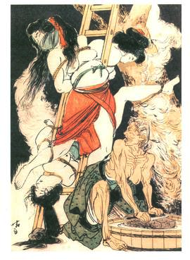
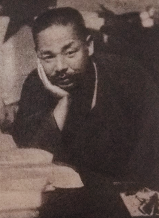

¿Qué es el Shibari? Origen y marco de la atadura japonesa
El Shibari es una práctica de atadura corporal originada en Japón, vinculada históricamente a técnicas de restricción, control y exposición del cuerpo. A lo largo del tiempo, estas técnicas evolucionaron desde contextos funcionales hacia formas de práctica contemporánea dentro del ámbito del BDSM.
Parte del desarrollo moderno del Shibari está influenciado por el trabajo de Seiu Itō, artista japonés que documentó y exploró la atadura como una expresión de poder, tensión y confrontación corporal, alejándola de una lectura meramente decorativa o romántica.
En Piel y Cuerdas abordamos el Shibari desde una línea que prioriza la intención, la tensión y el control consciente, entendiendo la cuerda como una herramienta de restricción y disciplina corporal, no como un recurso afectivo ni estético por sí mismo.
Este enfoque concibe la atadura como una práctica estructurada, donde el límite, la incomodidad y la responsabilidad forman parte del aprendizaje técnico, siempre dentro de un marco de consentimiento informado y seguridad.